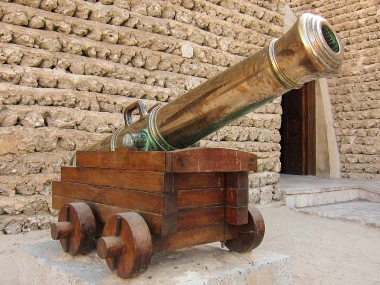
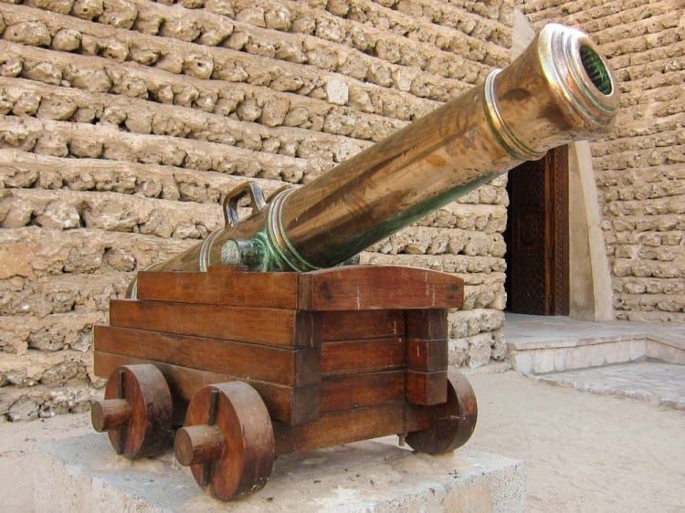

Visit the Dubai Museum and encounter colourful dioramas and enlightening historic exhibits. Housed in the Al Fahidi Fort, this is the oldest existing building in the city, and is a must-visit for a taste of old Dubai. Built in 1787, this fort was once a monarch base, a force of defence, a weapons arsenal and prison, before being renovated during the reign of Sheikh Rashid bin Saeed Al Maktoum. In 1971 – the same year the United Arab Emirates was formed, the fort reopened as Dubai Museum.
Showcasing Dubai’s history and its original heritage, you can get a glimpse of everyday life before the discovery of oil. The galleries recreate historic Arab houses, mosques, souks, date farms, desert and marine life. You can also explore the rich history of pearl-diving in the region, including actual weights and scales used at the time. In fact, items dating as far back as 3000BC are on show, carefully preserved and cared for to ensure even more longevity.
VISITING HOURS : 
